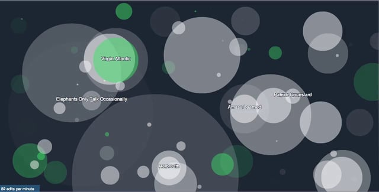

Jonathan Walton
Hello.
I'm an artist, musician, linguist and hacker with a special interest in anthropology, politics and education. I know a few languages, some better than others: Russian, French, Croatian, Japanese, Hungarian, Tamil, Hebrew, Arabic, Ruby, Javascript, Python.
Here you can find some things about me, not least that someone once made me customised tins of Russian condensed milk, сгущёнка.Just to be clear, I'm not this person or this person. And if you want the "About This Site" page, that's here.
If there are some things that aren't clear, don't worry - there will be notes.I have a thing for academics, you should know. Probably ever since I dropped out of a Masters to go on tour.
In no particular order, I'm interested in folklore and ritual culture, radical education, human languages, singing and vocal techniques, sound, acoustics, absurdist literature, identity politics, language acquisition and loss, dance and the body, computational linguistics, storytelling and children's culture, statistics, computer hacking, censorship, Russia and the former Soviet Union, India, Roma and Jewish issues, liminal spaces, sacred music, infrasound, social structures, ownership and art as activism.
Below are a few highlights from my past work in music, technology, radical education and media.
Music
Great artwork #306, courtesy of the genius that is Melamed.
Bands
I spent many years of my life running bands, performing on stage and touring. It is still something I love to do. I got some great artwork out of it. From my first band Oi Va Voi, I got to see a glimpse of the rock'n'roll touring life. It was my education - as a professional songwriter, bandleader and co-producer alongside top producers and industry folks.
My next band Shtetl Superstars was formed as a satirical response to the wave of racist sentiment in the UK.
My last band Yiddish Twist Orchestra was a continuation of this feeling: an art project that uses London social history to tell a truthy story about the hybrid mix of immigrant Yiddish, West Indian and Latin sounds in London's Soho at the dawn of the rock'n'roll era.
Artist and Vocal Production
I've produced a few artists , and it has helped me to understand a thing or two about performance, particularly vocals. Whether blessed with a voice like an angel or as rough as sandpaper The best recordings I've ever worked on have been with artists who understand that singing behind a mic and singing on stage are one and the same. That kickstarted my interest in working with singers, and I've since learnt a lot more about the mechanics of the voice. It never ceases to amaze me how magical the voice is, and how we can create different resonances and voice types by constricting our muscles and obstructing our airways in different ways.
Songwriting
There are plenty of ways to write a song. As a poetry graduate, I lean towards writing lyrics and then setting them to music rather than the other way round.
Theatre
My first degree was in Russian and French literature, and I've spent many a happy hour in a dark theatre watching magic unfold on stage. Watching actors and musicians bring your ideas to life is one of the greatest compositional thrills I know.
Film, TV & Short Form
I was a partner in a central London music studio, Lemez & Fridel for some years, and we worked with all sorts of wonderful artists for their albums, theatre productions and TV spots.
Current Projects
I'm currently learning the vocal repertoire of Carnatic music in South India, researching music and medicine in Indian traditions, and working with music and sound in special needs education. I'm the son of an anaesthetist, so you could say it's in my haemoglobin.
Politics
Election Song Contest
Our election song contest top hit.
Most of my work is socio-political: pro-immigration, anti-stupidity, pro-hyphens. Rightwing politics in the UK makes me sick to my stomach
Kids
Children, especially small ones, are the toughest audience for art in the world. To make something that keeps a 3-year-old coming back for more, is one of the hardest things in art.
Education
Puppy gets it, but all in the cause of English grammar.
Technology
 Geeks do beautiful things. Like this.
I taught myself to code because I love geekery and it seemed like a perfect excuse. Also I had just founded a startup and I realised that London was a terrible place to look for programmers. The graph on the tech page shows how much time I've been coding recently: each coloured square represents a 'commit' - ie something that I've coded that I want to save online to my Github repository. - a kind of backup system for code.
Media
Radio
Recorded in Accra, Ghana, as part of BBC Radio 2's World Class Brass.
I love radio. Back in the day, BBC World Service were nice enough to let a bolshy graduate in off the street pitch a feature about music and politics in Ukraine, and I never looked back. I've produced and presented feature documentaries and reports for BBC World Service, BBC Russian Service, BBC Radio 2, BBC Radio 3, CBC Canada, Resonance FM, and helped to set up OpenAir at SOAS, University of London.
Film
Why archaeology and conflict don't mix well.
I was part of a small indie TV & film production company in Jerusalem for two years. We made cultural reports and documentaries, and sold them mostly to Scandinavian broadcasters (apparently not much happens up there). Our proudest moment was winning the Audience Prize at Nyon Film Festival for a film about archaeology and politics.
Writing